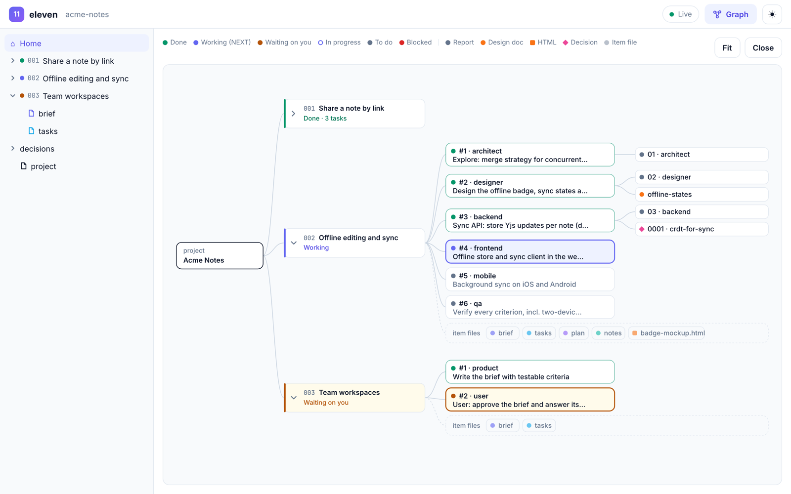
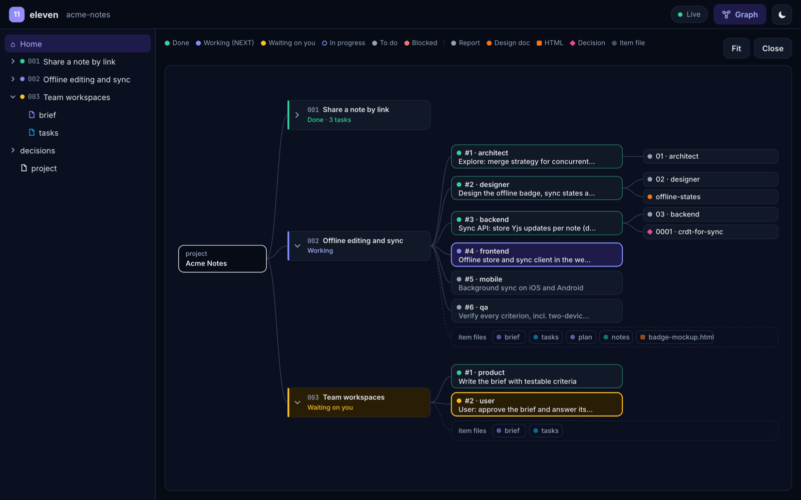
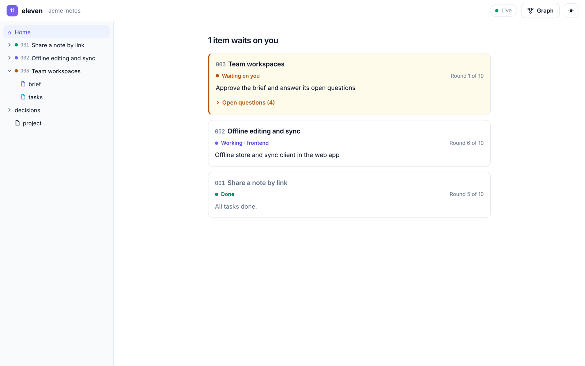
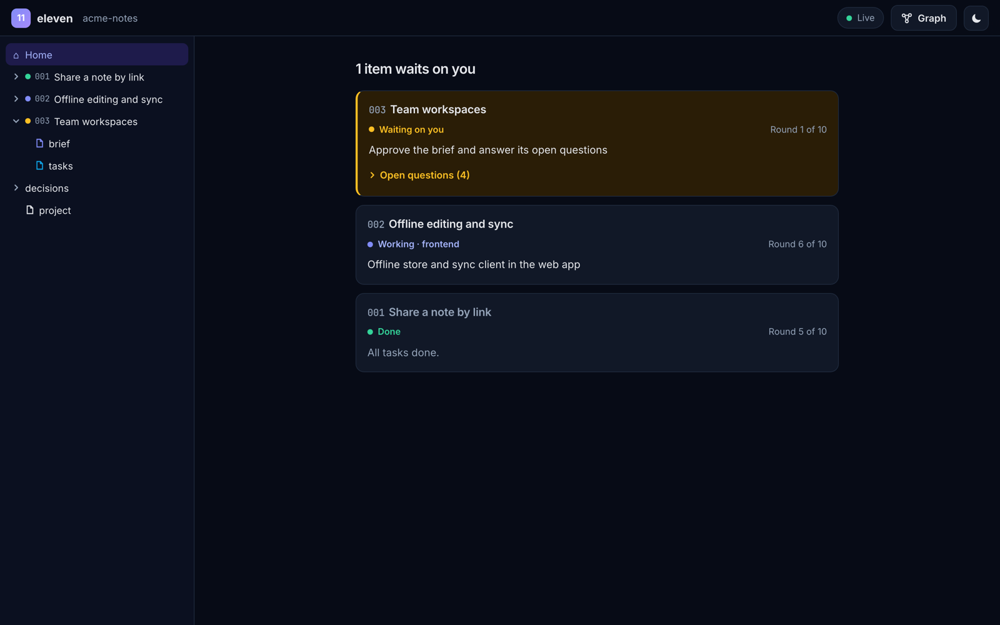
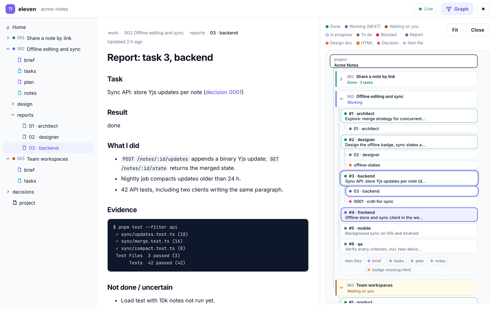
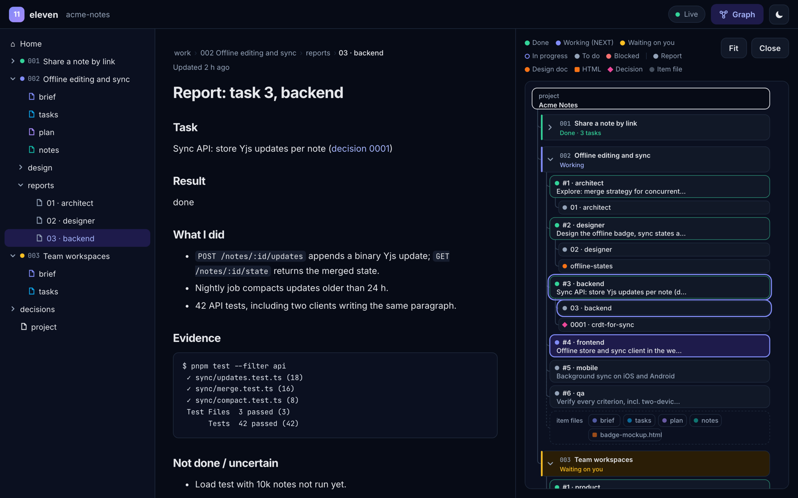

مفتوح المصدر · MIT · macOS وWindows وLinux
ذكاؤك الاصطناعي،
يعمل كفريق.
أحد عشر دورًا، وحلقة عمل واحدة، وملفات مشتركة. ضع مجلدًا واحدًا في أي مشروع، فيعمل وكيل البرمجة لديك كفريق برمجيات متكامل: المنتج، والتصميم، والمعمارية، والتطوير، وضمان الجودة، وDevOps، والأمن، والتوثيق، بقيادة CTO.
11 دورًا1 حلقة عمل0 خوادم
شكل 1أحد عشر وترًا، وحلقة واحدة. تحتاج نظرية M إلى أحد عشر بُعدًا لتوحّد نظريات الأوتار الخمس، ويوحّد eleven أحد عشر دورًا في فريق واحد.
01التثبيت في دقيقة
مجلد واحد.
لا يراه git.
يُثبَّت eleven في ./eleven داخل مشروعك ويُخفي نفسه عبر .git/info/exclude، فلا يراه مستودعك ولا زملاؤك. بلا اعتماديات، وبلا خادم.
انسخ الحزمة مرة واحدة
نسخة واحدة على جهازك تخدم كل مشاريعك.
ثبّتها في مشروع
يُنسخ
eleven/إلى المشروع ويُخفى عن git. أعِد التشغيل متى شئت؛ فالخيار--updateلا يمسّ عملك أبدًا.اطلب من وكيلك أن يقود
Claude Code أو Codex أو opencode أو Cursor: أي وكيل يقرأ
AGENTS.md.
ثم قل لـ Claude Code أو Codex أو opencode أو Cursor:
Read eleven/AGENTS.md and act as the CTO. New item 001: <your idea>. Start at step 0.
02كيف يعمل
حلقة عمل،
لا محادثة طويلة.
المحادثات الطويلة تفسد: يمتلئ السياق بالضجيج، وينسى النموذج قراراته. يمنح eleven كل مهمة وكيلًا جديدًا، ويحفظ الذاكرة في مجموعة صغيرة من الملفات تُعاد كتابتها باستمرار، اسمها السجلّ.
- 01
الاستلام
productيكتب مدير المنتج موجزًا بمعايير قابلة للاختبار. أنت توافق.
بوابة - 02
التخطيط
ctoيكتب الـ CTO استراتيجية قصيرة ومهامّ أولى.
- 03
الاستكشاف
architectيحدّد المعماري الجزء الصعب، والخيارات، والمزالق. لا كود بعد.
- 04
الإدارة
ctoيختار الـ CTO مهمة تالية واحدة فقط، لدور واحد.
- 05
التنفيذ
any roleينجز وكيل جديد تلك المهمة ويقدّم تقريرًا مدعومًا بالأدلة.
- 06
التحقق
qaيفحص الـ QA كل معيار. الفحص الأحمر يغلب أي «تم».
- 07
الإطلاق
ctoدمج وإصدار بدفعات صغيرة ومتكررة. أنت تقبل.
بوابة
الضوابط
- حدّ أقصى 10 جولات
- توقّف عند غياب التقدّم
- plan.md لا يتجاوز 4000 حرف
- notes.md لا يتجاوز 8000 حرف، ويُعاد كتابته
- الأسئلة المفتوحة توقف العمل حتى تجيب
- مهمة واحدة لكل سياق جديد
03الفريق
أحد عشر دورًا.
وأنت الرئيس التنفيذي.
كل دور ملف Markdown قصير: ما يفعله، وما لا يفعله أبدًا، ومتى ينتهي عمله. ولا تحتاج كل مهمة إلى الجميع؛ فإصلاح خطأ يكفيه: CTO ← مهندس ← QA.
CTOlead
يدير حلقة العمل: يخطّط، ويختار المهمة التالية ودورها، ويدمج، ويُطلق، ويفرض الضوابط.
مدير المنتج
الموجز، والنطاق، وما هو خارج النطاق، ومعايير قبول قابلة للاختبار.
المصمّم
مسارات الاستخدام، والشاشات، وكل حالة، ونصوص حقيقية، وإتاحة الوصول.
المعماري
جوهر الصعوبة، والمقاربات، والواجهات، ووثائق القرارات.
Backend
واجهات API، ومنطق النطاق، والبيانات، وترحيلات آمنة. الاختبار أولًا.
Frontend
واجهة ويب مطابقة للتصميم في كل حالاتها، سهلة الوصول وسريعة.
الجوال
iOS وAndroid: العمل دون اتصال، ودورة حياة التطبيق، والأذونات.
QA
يتحقق من كل معيار بالأدلة، ويملك حق نقض «تم».
DevOps
التكامل المستمر (CI)، والنشر، والتراجع، والمراقبة.
الأمن
نمذجة التهديدات والمراجعات. الثغرات عالية الخطورة توقف الإطلاق.
الكاتب التقني
README والتوثيق وملاحظات الإصدار، مطابقةً لما أُطلق فعلًا.
أنتCEO
توافق على الموجز، وتجيب عن الأسئلة، وتقبل النتيجة.
04الواجهة الحية
شاهد فريقك
وهو يعمل.
افتح مجلد مشروعك في المتصفح. تقرأ الصفحة السجلّ بينما يكتبه وكلاؤك، وتبقى ملفاتك على جهازك.






المشروع ← البنود ← المهام ← المخرجات
يعرض مخطط العمل كل مهمة ملوّنة حسب حالتها، مع التقارير والتصاميم والقرارات التي أنتجتها. انقر أي عقدة لفتحها.
ما يجري الآن، وما ينتظرك
بطاقة لكل بند. البنود التي تنتظرك تأتي أولًا باللون الكهرماني، وأسئلتها المفتوحة مطويّة.
اقرأه كما في Obsidian
شجرة ملفات على اليسار، والمستند في الوسط، والمخطط بجانبه. المسارات داخل المستند روابط. بمظهرين: فاتح وداكن.
05مبني على البحث
التنظيم يتفوّق
على حجم النموذج.
حلقة عمل eleven مستمدّة من GVS5H (Gao وآخرون، 2026): نموذج واحد يُقسَم إلى مدير وعمّال جدد، لكلٍّ منهم مهمة واحدة، ينسّقون عبر ملفات على القرص.
نقطة إضافية في مسائل LiveCodeBench الصعبة لنموذج Qwen3.8-27B.
نموذج رخيص منسَّق تفوّق على نموذج رائد…
…بنحو 9% فقط من التكلفة.
- التجزئة: مهمة واحدة لكل استدعاء تُبقي كل وكيل مركّزًا.
- سياق دائم: السجلّ يبقى بعد انتهاء أي محادثة.
- التفكير على القرص قبل الكود: الملاحظات أولًا، ثم التنفيذ.
- الكلمة الأخيرة للمُتحقِّق: اختبار فاشل يغلب «تم» مهما بدت واثقة.
وللإنصافتستهلك هذه البنية نحو 3 أضعاف الرموز (tokens) مقارنةً باستدعاء واحد، والنماذج القوية هي الأقل استفادة، وبعض الإعدادات ساءت نتائجها. ويضيف eleven الأدوار التي يحتاجها منتج حقيقي (التصميم، والأمن، وDevOps، والتوثيق)، ويُبقيك عند كل بوابة.
المصدر: Gao وآخرون، 2026، arXiv:2608.26480
06لماذا eleven
صغير بما يكفي لتقرأه.
صارم بما يكفي لتثق به.
الحزمة كلها نحو 25 ملف Markdown. اقرأها في ربع ساعة، ثم غيّر فيها ما تشاء.
يعمل مع وكيلك
Claude Code وCodex وopencode وCursor: أي وكيل يقرأ AGENTS.md. بلا ارتباط بمزوّد، وبلا إطار عمل.
واجهة حية في المتصفح
افتح مشروعك على eleven.rtima.org/app أو محليًا: شجرة ملفات، وقارئ لكل مستند، ومخطط للعمل. تتحدّث كل ثانيتين، ولا يُرفع أي شيء.
ما ينتظرك، أولًا
حين تكون الخطوة التالية لك، تتصدّر بطاقة ذلك البند باللون الكهرماني: سطر واحد بما عليك فعله، والأسئلة المفتوحة مطويّة تحته.
أدلة، لا انطباعات
كل تقرير يلصق مخرجات البناء والاختبار الحقيقية، ويعيد الـ QA تشغيلها.
قرارات موثّقة
الخيارات المكلفة تُوثَّق في صفحة واحدة، فلا يعيد أحد الجدال فيها الشهر القادم.
install.ps1
متعدد المنصات
install.sh لـ macOS وLinux، وinstall.ps1 لـ Windows. إعادة التثبيت آمنة، و--update لا يمسّ عملك أبدًا.
07أسئلة شائعة
أسئلة،
وأجوبتها.
Q1هل يستهلك رموزًا (tokens) أكثر؟
نعم، غالبًا نحو 3 أضعاف محادثة واحدة في الحلقة الكاملة. في المقابل تحصل على إعادة عمل أقل، ومفاجآت أقل، وأثر مكتوب يشرح سبب كل قرار. وللإصلاحات الصغيرة تخطَّ بعض الأدوار: CTO ← مهندس ← QA.
Q2هل يُرسَل الكود أو السجلّ إلى أي مكان؟
لا. eleven مجرد ملفات داخل مشروعك. تقرأ الواجهة الحية مجلدك داخل متصفحك عبر File System Access API، ولا يُرفع أي شيء.
Q3ما المتصفحات التي تدعم الواجهة الحية؟
يعرض Chrome وEdge التحديثات مباشرة. أما Firefox وSafari فيفتحان لقطة ثابتة؛ اختر المجلد مجددًا لتحديثها. وفي الحالتين تبقى الملفات في متصفحك ولا يُرفع أي شيء. وملفات HTML الموجودة في السجلّ تُفتح داخل إطار معزول (sandbox).
Q4هل سيراه زملائي؟
لا. فهو مستثنى عبر .git/info/exclude، وهذا الملف محلي في نسختك من المستودع. ولمشاركة السجلّ مع فريقك، احذف ذلك السطر وأضِف eleven/work في commit.
Q5هل أستطيع تعديل الأدوار؟
بكل تأكيد. حين يكرّر وكيلٌ خطأً ما، أضِف سطرًا إلى ملف دوره. هكذا يتعلّم فريقك.
توقّف عن الدردشة.
وابدأ القيادة.
امنح وكيلك فريقًا، وحلقة عمل، وتعريفًا واضحًا لـ«تم».